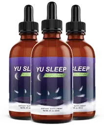
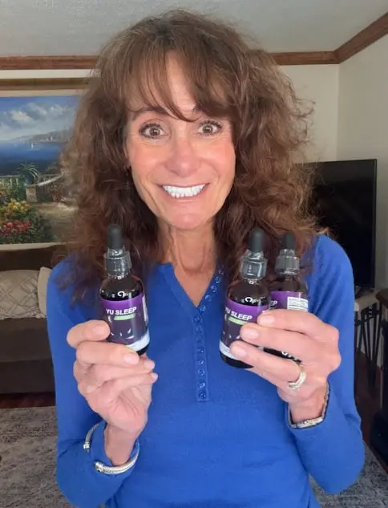
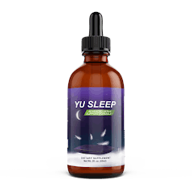
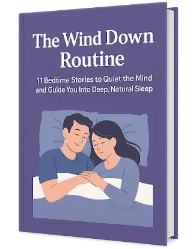
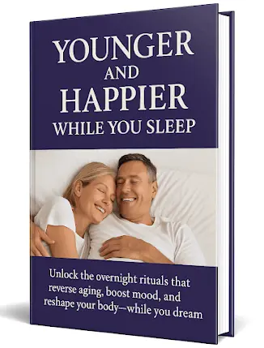
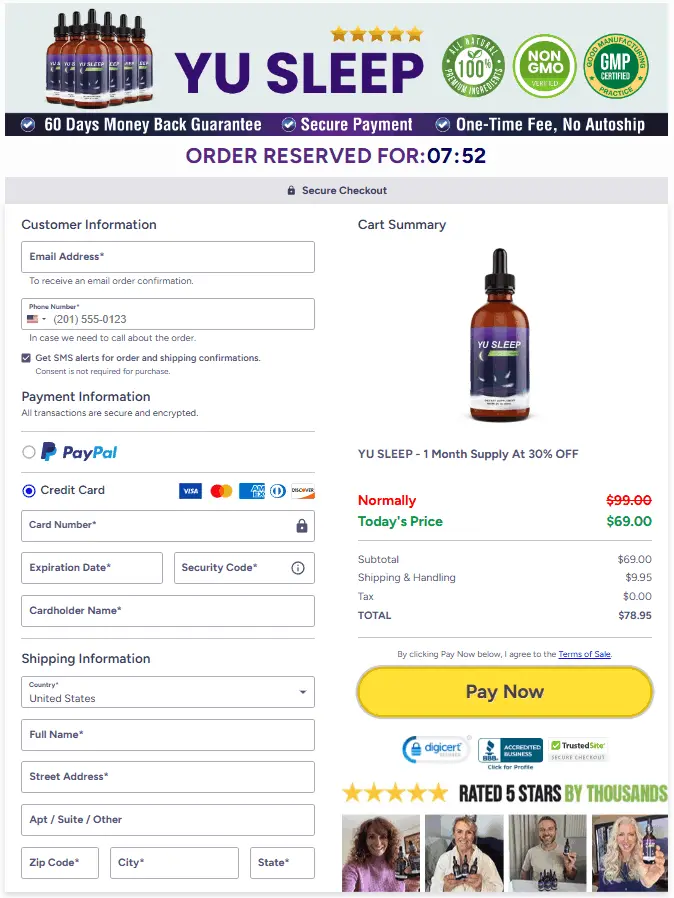

Follow Us
Why wait? Tap the button below to order Yu Sleep now and start
your journey to deeper, more restorative sleep. Transform your
nights—and your whole life—beginning today!

If you’re unable to sleep at night, waking up during the night,
or just generally exhausted even after a full night’s sleep,
then Yu Sleep is the answer to your frustrating problems. It’s a
smooth, natural blend designed to help you sleep with its
natural and plant-based ingredients, including tart cherry,
GABA, L-Theanine, 5-HTP, and a touch of melatonin. All of these
natural ingredients combine to calm your mind, ease your body,
and assist you in falling asleep quicker, without that morning
sluggishness.
Yu Sleep doesn’t make your body sleep like strong sleeping
pills. Instead, it works with your body’s natural sleep cycle to
allow you to rest and recharge calmly and awaken rejuvenated.
Whether you’re stressed, depressed, or simply can’t catch a good
night’s sleep and need to sleep better, Yu Sleep makes it easy
to relax at night and be energized during the day.

Yu Sleep might be the solution you have been looking for if you
are tired and frustrated from not being able to sleep properly,
staring at the ceiling the whole night, and waking up in the
middle of the night. This is a gentle, plant-based, and natural
way to help you sleep better at night without making you feel
weird or having any side effects, unlike other strong sleeping
pills. Ingredients like red tart cherry, L-Theanine, 5-HTP, and
a small amount of melatonin help you calm your nervous system,
get relief from stress at night, and help your body to fall
asleep fast and for a longer time.
It also helps your sleep cycle get back to normal over time, so
your body can remember how to rest well on its own. You can try
Yu Sleep without any worry because it comes with a 60-day
money-back guarantee, under which you can claim a full refund if
you are not satisfied. If you think you need to sleep better, Yu
Sleep can help you get better sleep tonight and wake up feeling
refreshed, and you can wake up refreshed from today if that
sounds like something you need.

Yu Sleep is a natural sleep aid that helps you
fall asleep faster, stay asleep longer, and wake up feeling
rested. It doesn't contain drugs or sleeping pills; instead, it
has safe, plant-based ingredients like tart cherry, L-Theanine,
GABA, 5-HTP, and a small amount of melatonin. These ingredients
are known to help your body and mind relax before you go to bed
without making you feel tired in the morning. It's perfect for
people who are struggling to sleep at night or who wake up
feeling like they didn't sleep at all.
Yu Sleep doesn't work like your other heavy sleeping pills,
which forcefully make you sleep; instead, it helps you fall
asleep more easily and sleep more deeply by working with your
body's natural rhythm. It's like giving your body a soft push to
sleep instead of forcing it. Yu Sleep can help you get your
sleep back on track without chemicals or side effects, whether
you're stressed out at work, anxious at night, or just not
sleeping well anymore. You can use it as needed or every night,
depending on what your body needs, and it won't make you
addicted.
Yu Sleep is made in the USA in a factory that follows strict
quality rules. People who have used it say they sleep better,
feel better, and wake up feeling better than ever. It's
gluten-free and non-GMO. All you have to do is take two drops 30
minutes before bed, and you'll be on your way to a peaceful,
natural sleep. Yu Sleep might be the easiest way to get back to
sleeping like you used to if you're tired of changing sides.
Yu Sleep is developed in an FDA-approved facility, ensuring its Safety standards and quality.

Yu Sleep is made with natural, plant-based ingredients that
improve your sleep.

Yu Sleep is manufactured in a USA facility, which ensures its authenticity and authority.

It is developed in a GMP-certified facility, which ensures
high quality and safety.
Yu Sleep's natural ingredients help you relax
your mind and body, which enables you to fall asleep naturally and
stay asleep all night. Unlike other strong sleeping pills, this
one won't knock you out or make you feel strange. Yu Sleep, on the
other hand, uses natural plant-based ingredients that work with
your body's natural sleep cycle. The ingredients in this product
are meant to calm your mind, lower your stress, and get your body
ready for sleep without any bad side effects.
Yu Sleep also works by supporting your brain’s “sleep pressure
system.” This is a natural process that builds up during the day
and tells your body it’s time to sleep at night. Yu Sleep gently
increases that sleepy feeling, so when bedtime comes, your body
naturally wants to rest. It also includes calming ingredients like
L-Theanine and GABA to slow down racing thoughts and help you
mentally relax.
5-HTP and other ingredients can help improve your mood. Tart
cherry extract and a small amount of melatonin can help reset your
body's sleep-wake clock. When you mix all of these things, they
allow you to fall asleep faster, sleep more soundly, and wake up
feeling refreshed instead of tired or sleepy. Yu Sleep can even
help you get good sleep habits over time, so your body learns to
sleep better on its own. It's a totally safe and natural way to
improve your nights and mornings.
Yu Sleep Customer Reviews
"I used to lie awake for hours, looking at the ceiling. Yu Sleep helped me calm down, go to sleep faster, and wake up without feeling drowsy. "It's been a real lifesaver."
"I've tried a lot of sleep aids, but this one works. No grogginess, no strange side effects—just calm, steady sleep every night. I finally wake up feeling rested and clear."
“I was constantly waking up at 2 or 3 a.m. Since starting Yu Sleep, I stay asleep and feel more balanced during the day. It has been a good influence on my mood too.”
We want you to feel completely comfortable trying Yu Sleep.
That's why we give you 60 days to get your money back on every
order. You can get your money back if you don't see any real
changes, like falling asleep faster, sleeping through the night,
and waking up feeling refreshed. No stress, no trouble, and no
questions asked.
The people who made Yu Sleep really believe in this formula.
They made it so that people like you could have better nights
and brighter mornings. So go ahead and try it out to see how
much better sleep can feel. You have nothing to lose and
everything to gain.
Yu Sleep is completely made from natural plant-based ingredients, which help you relax your mind and body to help you sleep without waking up in the middle of the night. Let’s see more about the ingredients in detail:
When you order Yu Sleep, we want your experience to be just as
amazing as the results. That's why we ship for free right to
your door with no additional or hidden fees. To get our 3- or
6-bottle bundle, all you have to do is order it, and we'll bring
it to you for free.
Begin your journey to get better sleep and wake up refreshed. So
why put it off? Order today and get free, fast delivery from Yu
Sleep.

This relaxing bedtime book has 11 soft stories that will help you relax and fall asleep deeply and peacefully, just like when you were a kid and someone read to you at night. Open Yu Sleep to any page and let yourself drift off.

This science-based guide shows you easy things you can do at night to help you relax, lower your stress, and feel younger and more energized, starting while you sleep. You'll feel better, brighter, and ready to take on the day when you wake up.
✅ It helps you fall asleep naturally without making you
feel drugged or weird.
✅ Yu Sleep keeps you asleep longer and lowers the
frequency of waking up in the night.
✅ Yu Sleep is made from 100% natural, plant-based
ingredients that work with your body without forcing it.
✅ It supports a healthy sleep cycle that you can maintain
over time and improve your overall health.
✅ It's great for reducing stress and calming down your
overactive mind when you are going to sleep.
✅ It comes with a 60-day money-back guarantee, under
which you can get a full refund if you don’t like it or
are not satisfied with the results.
❌It is not a quick-fix sleep pill or something like
strong sleeping drugs, which will give you immediate and
temporary relief.
❌It works best when you take it daily before going to
bed. Its results may vary depending on an individual’s
health condition, lifestyle, and many other factors.
❌It is only available online on its official website and
is not sold in stores or local pharmacies, to ensure you
won’t get a fake one.

Is My Payment Information Secure?
Absolutely. All orders are processed through ClickBank’s secure
and encrypted system, protecting your privacy and payment
details every step of the way.
60-Day Money-Back Guarantee
Try Yu Sleep risk-free. If you're not 100% satisfied with your
results, simply contact us within 60 days for a full refund—no
questions asked.
Why Choose Yu Sleep?
Yu Sleep is a natural, science-supported solution for better
rest. Its advanced nano-enhanced formula features powerful
ingredients like Tart Cherry, GABA, and L-Theanine to promote
faster sleep onset, deeper rest, and refreshed mornings.
Just a few nights of consistent use can bring noticeable
improvements in mood, energy, focus, and immunity. Made in the
USA, FDA-registered, GMP-certified, and shipped free to your
door, Yu Sleep is your all-natural path to restorative sleep and
better well-being.
Yu Sleep is a natural supplement to help you sleep and is easy on your body, which is made with safe ingredients like tart cherry, melatonin, and L-Theanine. It helps your body relax so you can fall asleep faster, stay asleep longer, and wake up feeling great.
No. Yu Sleep doesn't force your body to sleep. It helps your body’s natural sleeping process gently, without forcing. You won't feel drugged or weird; you'll feel calm and ready to sleep..
Yes, it's 100% safe to use every night. Yu Sleep is formulated with clean, plant-based ingredients and does not cause you to get addicted to using it. A lot of people take it nightly to sleep soundly and healthily.
It’s super easy. Just take two drops under your tongue about 30 minutes before bedtime. You can also mix it into a little water if you prefer.
Some people start feeling better and sleeping better after a few nights. For some, it may take 2 to 5 nights to get the desired results. Everyone's body is different, and results can be different for everybody.
The only place you can buy Yu Sleep is on its official website. You can't buy it in stores to make sure it's real and meets quality standards, so you don't get a fake one.
There is no need to worry. Yu Sleep comes with a 60-day money-back guarantee. If you aren't satisfied with the results or don't like the product, simply ask for your money back; without question, you'll get a full refund.
Most adults and older people can use Yu Sleep without any problems. It's best to consult with a doctor first if you have health problems or are a child.
The content and information presented on this page are solely for
informational purposes and should not be construed as medical
advice, diagnosis, treatment, cure, or prevention of any disease.
Statements on this page have not been evaluated by the FDA. It is
crucial to consult with a licensed healthcare professional before
incorporating any supplements or making changes to your diet or
exercise regimen. Individual outcomes may vary.
The presence of third-party trademarks and trade names on
this Official USA does not necessarily imply endorsement or
affiliation with our website. Clicking on a merchant link and
purchasing a product or service on their site may result in us
receiving a fee from the merchant.